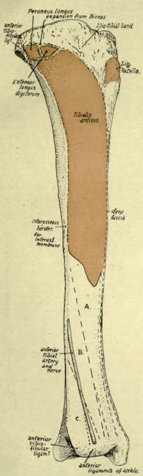
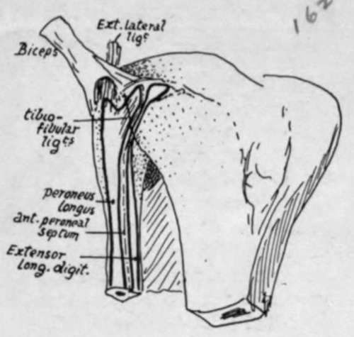
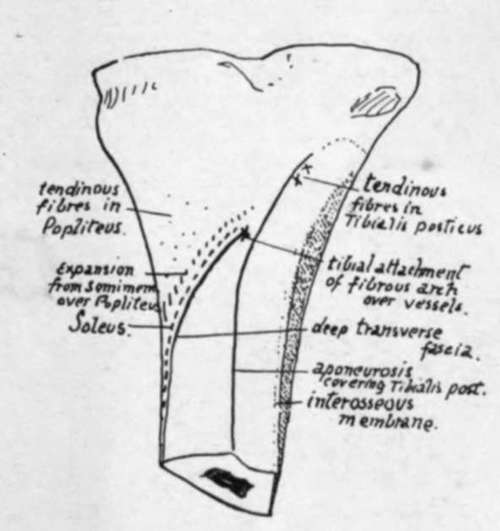

Fibula. Part 4
Description
This section is from the book "The Anatomy Of The Human Skeleton", by J. Ernest Frazer. Also available from Amazon: The anatomy of the human skeleton.
Fibula. Part 4
When the tibia passes on to the large front curve, the internal ligament gets taut at once, and so limits extension, like the anterior crucial ligament.
The external lateral ligament passes between the outer condyle and the head of the fibula. The tendon of Popliteus lies deep to it, between it and the tibia (Fig. 131), and makes its exit from the capsule behind it. Some of its posterior fibres make an arcuate band over the tendon, to join the condylar capsule. Its action, so far as the knee joint is concerned, is similar to that of the internal lateral.
The way in which these various structures are connected and covered in by the different tissues concerned in forming the capsule is illustrated and described in Figs. 120 and 131.
It is now possible to place these structures in position on the Tibia : they have already been considered as they lie on the upper surface of the bone.
In Fig. 131 the plan of the attachment of the capsule is shown, turning down in front to reach the insertion of the patellar tendon. This encloses the triangular surface A, on which is placed the infrapatellar pad and bursa. Observe that the capsular line behind lies near the edge of the bone and turns forward by the popliteal notch : here the proper capsular fibres are applied to the sides of the posterior crucial ligament.
Now observe the level of the epiphysial line (Fig. 131) : it lies some distance below the proper capsule, so that the epiphysis includes the fibular facet, the insertion of Semimembranosus, and the extreme upper part of the extensor musculature, as well as all the articular attachments with the exception of the lateral ligaments and a portion of the expansion of Vastus internus, as described later.
The upper epiphysis is that of the growing end. Observe that the epiphysial line cuts through the adult tubercle : this indicates that the lower part of the tubercle is really a portion of the shaft. A secondary ossification may form a traction epiphysis here, but it is more usual to find an additional centre for the upper part, joined to the upper epiphysis.
The upper end is cartilaginous at birth, but occasionally the centre, that should appear a few weeks later, is present at birth. The upper end may be somewhat tilted back, a persistence of the state normal in the infant, and a condition found regularly in some of the lower races.
Other markings, etc., to be found on the upper part of the tibia are shown in Fig. 131. A small smooth area just above the fibular facet is covered by cartilage and supports the bursa round the tendon of Popliteus : this bursa is mainly derived from the infrachondral part of the articulation and may communicate with the upper tibio-fibular joint. The Popliteus is inserted above the oblique line, over the area shown : it may have some tendinous fibres in its structures, and these may cause slight roughnesses on the bone above the oblique line. There is a clear margin of bone above the muscle, which is covered by Semimembranosus internally, but supports the popliteal artery centrally. The insertion of Semimembranosus extends well forward under the internal lateral ligament, with a bursa between them. The ligament makes a marking on the bone, on each side of its edge, a little distance above the oblique line, and inner fibres of the descending expansion from the Semimembranosus tendon reach it here, while the inferior articular vessels and nerve, which pass under the expansion, are thus brought to a deep relation with the ligament : the remainder of the expansion covers the inner part of Popliteus, extending as far out as the vessels lie, and reaches the oblique line.
The extensor area on the bone reaches up to the margin of the epiphysis. Trace the line of the covering aponeurosis up from the subcutaneous border (Fig. 132) along the outer side of the tubercle. It turns back towards the fibular facet and divides into an upper and lower line a little distance in front of this. The appearance presented varies in individual bones, but comparison between a number will enable one to establish the arrangement shown schematically in Fig. 133. The upper and lower lines mark out a triangular area which is subdivided by a vertical line, and the outer subdivision is for origin of Peroneus longus, the inner for Extensor longus digitorum. Peroneus longus extends from the head of the fibula across the anterior ligaments to the tibia : the vertical line is for the anterior peroneal septum, and the inner part of the lower line is for the septum between the long extensor and Tibialis anticus.
All these muscles are covered by an aponeurosis into which the Biceps sends an expansion, so that the upper line may be taken to represent part of the insertion of the Biceps.
Above and in front of this again, forming a rough marking on the bone between the aponeurotic and capsular lines, is the attachment of the strong ilio-tibial band.
Tibialis anticus arises from the upper half or more of the outer surface : its tendon runs downwards and slightly inwards, so that a large space is left on the widened bone below. Here the other extensor structures come into relation with the bone (Fig. 132). In fact, all the structures that pass down over the front of the ankle joint to reach the foot lie in front of the tibia, with the exception of the anterior peroneal artery, which usually descends in front of the fibula.
Fig. 132-The outer surface of the right tibia. The tendon of Tib. anticus covers the area A. B is covered by Extensor longus hallucis. C is in relation with Extensor longus digitorum.
Fig. 133.-Diagram to show how the Peroneus longus and Extensor longus digitorum pass from the fibula to the tibia, and occupy the areas shown in Fig. 132. The tendon of the Biceps is seen dividing into two strong bands over the external ligament, and expansions from these bands are prolonged over the two muscles.
Fig. 133A.-Scheme of analysis of the obhque line on the tibia.
Continue to:
- prev: Fibula. Part 3
- Table of Contents
- next: Fibula. Part 5